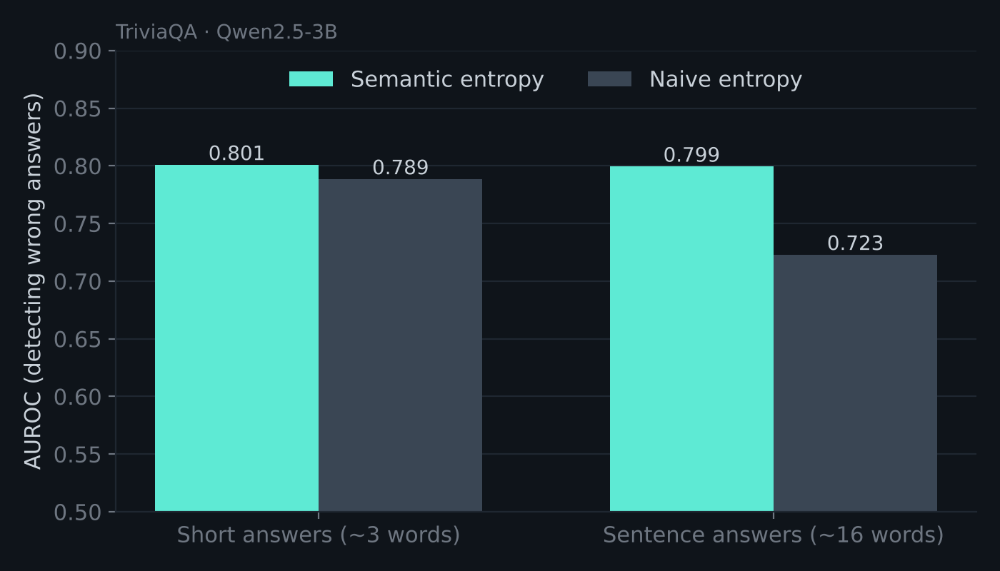

Semantic Entropy for LLM Hallucination Detection
Can you tell when an LLM is making something up, without knowing the right answer? I reproduced the semantic entropy method (Farquhar et al., Nature 2024) from scratch and tested when it actually helps.
- Sample 10 answers per question, group them by meaning with an NLI model (DeBERTa-MNLI), and measure entropy over meanings instead of wordings.
- Reached 0.80 AUROC detecting wrong answers on TriviaQA with Qwen2.5-3B.
- With sentence-length answers, semantic entropy beat naive entropy by +0.076 AUROC (95% CI +0.034 to +0.122). With short answers the gap vanished, because there was little rewording to correct for.
PyTorchHugging FaceQwen2.5DeBERTa-MNLIColab
